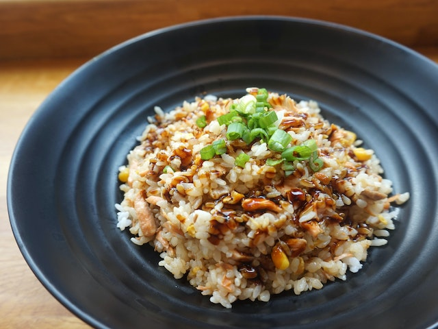

The Ultimate Breakfast - Easy Fried Rice

Ingredients
- ⅔ cup chopped baby carrots
- ½ cup frozen green peas
- 2 tablespoons vegetable oil
- 1 clove garlic, minced, or to taste (Optional)
- 2 large eggs
- 3 cups leftover cooked white rice
- 1 tablespoon soy sauce, or more to taste
- 2 teaspoons sesame oil, or to taste
Directions
- Assemble Ingredients.
- Place carrots in a small saucepan and cover with water. Bring to a low boil and cook for 3 to 5
minutes. Stir in peas, then immediately drain in a colander.
- Heat a wok over high heat. Pour in vegetable oil, then stir in carrots, peas, and garlic; cook for
about 30 seconds. Add eggs; stir quickly to scramble eggs with vegetables.
- Stir in cooked rice. Add soy sauce and toss rice to coat. Drizzle with sesame oil and toss again.
- Serve hot and enjoy!
Cook's Notes:
If you don't have any leftover cooked rice, here's how to make it: Combine 4 cups water and 2 cups
white rice in a saucepan; bring to a boil. Reduce heat, cover, and simmer until rice is tender and water
has been absorbed, 20 to 25 minutes. Remove from the heat and let cool to room temperature. For the
best fried rice results, cover and refrigerate the rice, 8 hours to overnight, before using in this recipe.
Home